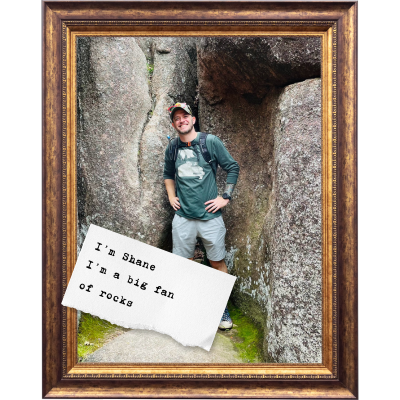

New here?

If you've landed here, it's likely you are looking for one of the links at the top.
Use Plant Wizard to find information on my local plant collection.
Find out more about who we are .
Visit our YouTube
I'm a computer nerd (See Network Engineer and Developer) by trade and a outdoorsman by passion. Some people call me Shane, my grandma nicknamed me Snookie before it was weird... The neighborhod kids call me Mr. T.
For now, this space will contain anything I'm working on. Creative posterboard if you will. There's some excellent working resource and more to come. Stay tuned!